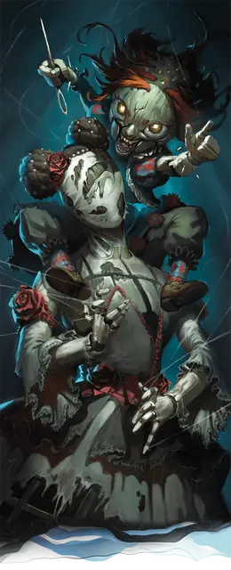

Мертвионетка
Carrionette
Крошечный Конструкт, Хаотичный Злой

Класс Защиты 15 Инициатива +4 (14)
Хиты 17 (5к4 + 5)
Скорость 25 футов
| мод | спас | ||
|---|---|---|---|
| СИЛ | 8 | −1 | −1 |
| ЛОВ | 15 | +2 | +2 |
| ТЕЛ | 12 | +1 | +1 |
| мод | спас | ||
|---|---|---|---|
| ИНТ | 8 | −1 | −1 |
| МДР | 14 | +2 | +2 |
| ХАР | 14 | +2 | +2 |
Сопротивление урону Психический, Яд
Иммунитеты Испуганный, Истощение, Отравленный, Очарованный
Чувства Тёмное зрение 60 футов, пассивное Восприятие 12
Языки Общий
Опасность 1 (200 опыта; БВ +2)
Действия
Серебряная игла. Бросок рукопашной атаки: +4, досягаемость 5 фт. Попадание: 1 Колющего урона плюс 3 (1к6) Некротического урона. Если цель — ещё не проклятый мертвионеткой Гуманоид, она подвергается следующему эффекту. Спасбросок Харизмы: Сл 11. Провал: Цель проклята на 1 минуту. Пока проклятие не окончено, цель Отравлена и её Скорость снижена на 10 футов.
Обмен душами (Перезарядка 5–6). Спасбросок Харизмы: Сл 11, один Гуманоид, видимый мертвионеткой в пределах 15 футов и проклятый её Серебряной иглой. Провал: Тело цели одержимо мертвионеткой, а тело мертвионетки — целью; помимо этого, цель получает состояние Бессознательный на 1 час. Пока одержимость не окончена, мертвионетка использует статистику цели, а цель — статистику мертвионетки, но их Мировоззрение, личность, владения языками и значения Интеллекта, Мудрости и Харизмы остаются неизменны; а кроме того, цель не может использовать действие Обмен душами.
Одержимость длится до тех пор, пока цель (в теле мертвионетки) не нанесёт урон мертвионетке (в теле цели) действием Серебряная игла. Если хотя бы одно из тел уничтожено, оба одержимых — и мертвионетка, и цель — умирают.
Бонус мастерства +2
Среда обитания Город
Сокровища Инструментальные
Мертвионетка
Злая игрушка, что обрела жизнь
Когда злая энергия наполняет ящик с детскими игрушками, некогда любимые забавы могут стать проклятыми чудовищами. Такова мертвионетка — оживлённая кукла или марионетка, которая с помощью тёмной магии меняется телами с живым существом.
Мертвионетки прячутся на самом виду — среди вороха игрушек или в коробке с забытыми безделушками. Годами мертвионетка может терпеливо ждать, пока её не схватит ничего не подозревающая жертва — предпочтительно авантюрист, торговец или кто-то ещё самостоятельный и крепкий телом. Дождавшись, она среди ночи выбирается из рюкзака и наносит внезапный душераздирающий удар.